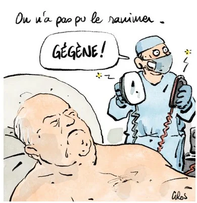

Hommage
Dix ans après Charlie Hebdo, un hommage aux dessinateurs
Date indiquée par Facebook · 7 janvier 2025
Repères éditoriaux
Notre publication du 7 janvier 2025 évoque Cabu, Charb, Tignous et Wolinski. Elle leur rend hommage en reprenant un dessin satirique.
Texte conservé avec la publication
En ce triste jour anniversaire, peut-être que Cabus, Charb, Tignous, Wolinski et les autres ont entamé une petite danse de joie :
LE VIEUX FACHO EST MORT !

Sources
Archive rouge · export Facebook · AR-0002-FB-01210
À lire aussi · 7 janvier 2015. Le PCF rend hommage aux victimes de l’attentat contre Charlie Hebdo